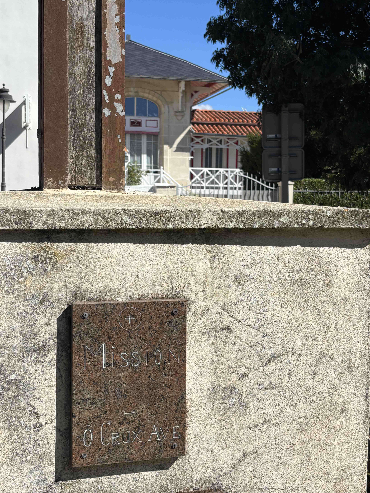

Quelle est l'année de la mission ?


Vos yeux ne suffiront pas ici. Mettez le son
Tentatives restantes : 4
Bravo !
La croissance tout bonnement exponentielle de notre belle station balnéaire a nécessité quelques ajustements spirituels d'envergure. Il a fallu rapidement ordonner la construction de cette très imposante église Sainte-Madeleine pour accueillir dignement la ferveur de nos riches estivants. Car la villégiature et les bains de mer n'excluent en rien la foi fervente, ni la plus stricte rigueur morale ! N'oubliez jamais que la mer est une création divine dotée de puissantes vertus curatives, et non un vulgaire terrain de jeu pour enfants dissipés.
Le code complet a été mis à jour. La première étape (question d'observation avec la photo `eglise.jpg`) apparaît dès le chargement. Une fois la réponse `1937` validée, l'étape audio (seconde partie) se débloque automatiquement en conservant le même design et les mêmes règles de tentatives. ```html

Quelle est l'année de la mission ?
Tentatives restantes : 4
Bravo !
La croissance tout bonnement exponentielle de notre belle station balnéaire a nécessité quelques ajustements spirituels d'envergure. Il a fallu rapidement ordonner la construction de cette très imposante église Sainte-Madeleine pour accueillir dignement la ferveur de nos riches estivants. Car la villégiature et les bains de mer n'excluent en rien la foi fervente, ni la plus stricte rigueur morale ! N'oubliez jamais que la mer est une création divine dotée de puissantes vertus curatives, et non un vulgaire terrain de jeu pour enfants dissipés.
Prenez donc bonne note de cette nouvelle règle fondamentale.
De l'Ordonnance Médicale et de la Flânerie Aquatique !
Sachez que l'immersion purement récréative est considérée comme une véritable hérésie psychiatrique. Quiconque s'aventurera dans l'eau salée par simple plaisir du jeu sera immédiatement arrêté et renvoyé chez lui par le tout premier train ! L'océan est une austère officine médicale, pas un charmant salon de thé mondain. Pour tremper un orteil, vous devez impérativement détenir l'ordonnance dument tamponnée par le Médecin Inspecteur des Bains. Les gloussements, les éclaboussures ludiques et autres conversations frivoles entre deux vagues glaçantes sont formellement proscrits.
Voici votre indice : La deuxième molette est un nombre impair.
Conservez-le précieusement pour espérer ouvrir le cadenas du coffre.